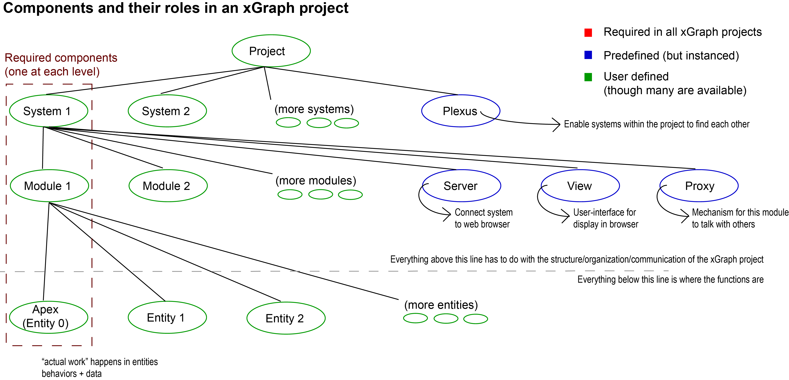

What is xGraph?
The xGraph architecture enables the creation of distributed intelligent
systems without a central controller. These
systems can be built to work as a system of systems where multiple,
independent systems work together.
An xGraph system is composed of one or more modules, each of
which is responsible for a specific task. Modules are composed of one or
more entities, each of which contains code and data to perform the
task of the module. Entities communicate with other entities to coordinate
the actions of the module.
An xGraph solution will typically consist of multiple interacting systems,
where these systems may be heterogenous or homogenous. A pre-built system
called plexus enables communication across distinct systems within a
system of systems (or "project").
The distributed structure of xGraph systems enables edge computing
applications, where nodes at the edge perform their tasks autonomously.
xGraph also supports the creation of complex systems models, agent-based
models, distributed analytics, and many other distributed intelligent
systems.

Language issues:
- xGraph architecture
- xGraph system is composed of ... "nodes" in the above, but that's
the wrong label. system consists of components, which have modules,
which have entities
- This alters the whole discussion of connections between nodes
(Might be worth saying something about connectivity within and across
systems, e.g., which connections are directed and which ones are
bidirectional.)
(I am leaving the following for now, but I don't know what "node"
corresponds to, and whether it's just entities or all of systems, modules,
and entities.)
An xGraph system consists of a set of nodes. Each node is autonomous,
responsible for its own calculations and actions, but nodes communicate
with other nodes so that the system can achieve a common goal. The
connections between the nodes result in a graph structure; we refer to
this structure as an executable graph framework.